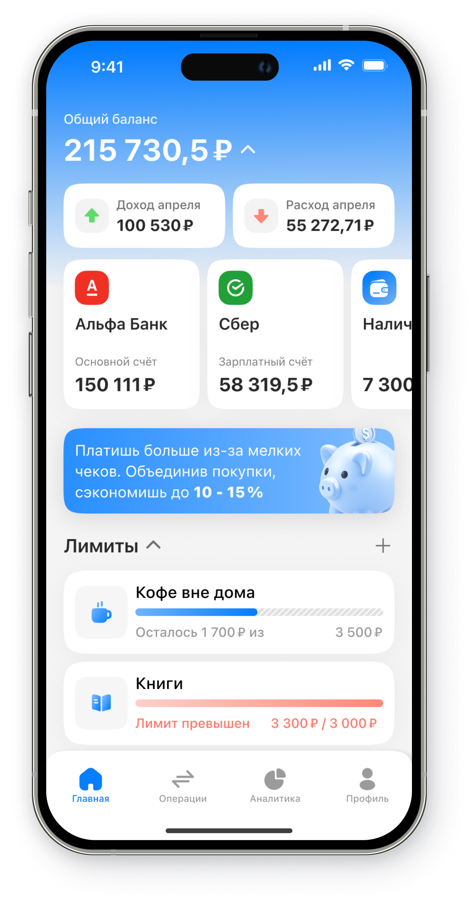
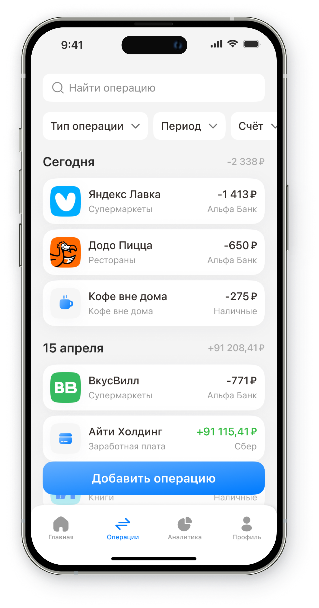
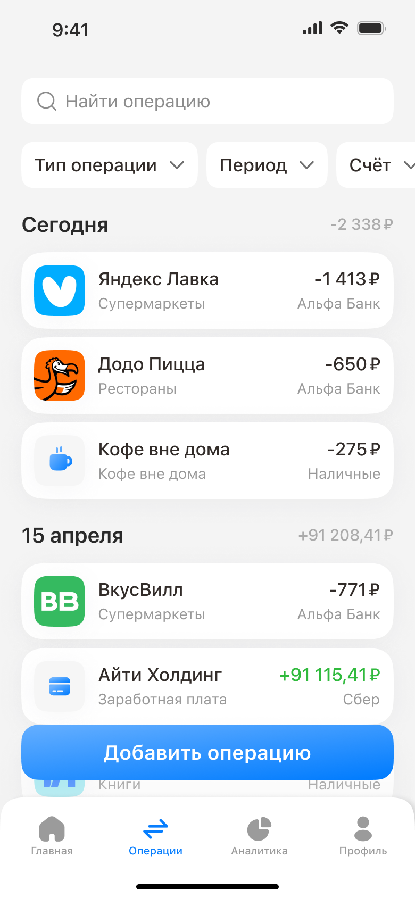
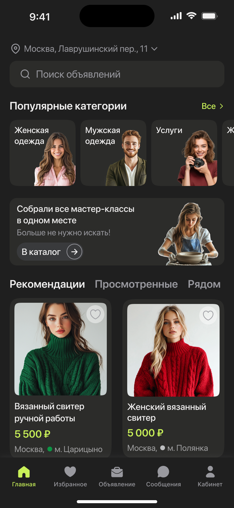
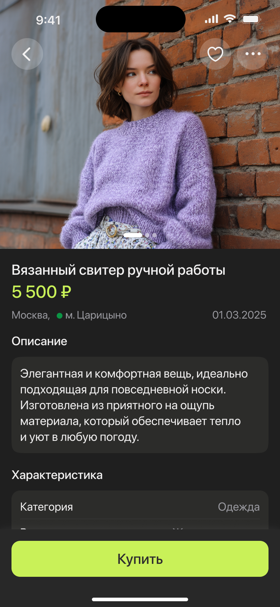
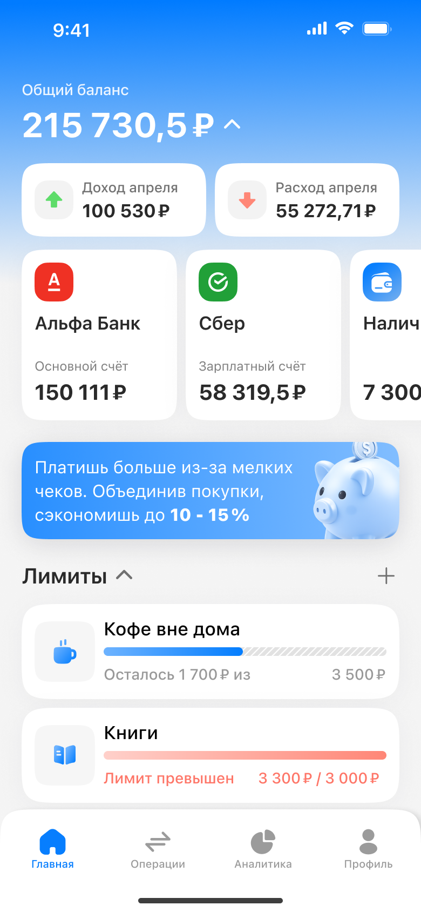

Если пользователь будет получать ежедневные инсайты на основе своих финансовых привычек, это мотивирует регулярно возвращаться в приложение.

Спроектировать мобильный сервис для управления личными финансами, который сочетает простоту банковских приложений с инструментами анализа, планирования и контроля бюджета.

Текущий рынок приложений для управления личными финансами демонстрирует разрыв между текущим уровнем UX/UI решений и ожиданиями пользователей, сформированными современными банковскими fintech продуктами.



Изучила профильные приложения и банковские сервисы. Сравнила структуру продуктов, сценарии автоматического синхронизирования банковских операций и ручного ввода расходов.
С помощью GPT я проанализировала свои финансовые привычки, что позволило определить, какие рекомендации и инсайты будут наиболее полезны пользователям.

Если графики доходов и расходов будут простыми и понятными, пользователи лучше поймут свои финансовые привычки.
Если добавить финансовые цели и прогресс накоплений, пользователи будут более мотивированы откладывать деньги.
Если пользователь видит все расходы и доходы в одном месте, он лучше контролирует бюджет.
В этом кейсе я развивала не только визуальную часть продукта, но и продуктовый подход: от анализа ключевых сценариев до поиска решений, которые повышают ясность и регулярность использования сервиса.